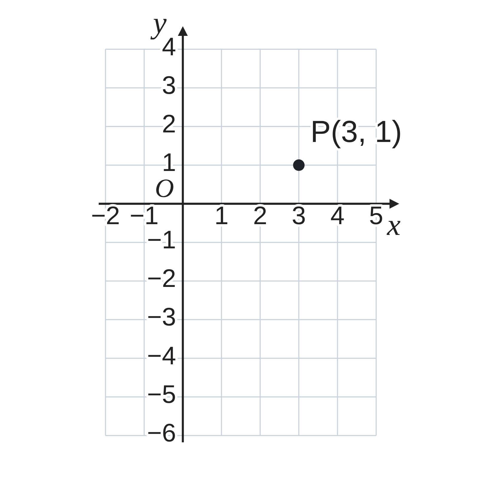

ペア学習
第9時 傾きと1点から、一次関数の式を求めよう
第8時の重要語句から、1人1問ずつ、言葉を選んで出題する。
聞かれた人は、その言葉の意味を、自分の言葉で言う。
x の変域
y の変域
≦（以上・以下）
線分
一次関数 第9時 傾きと1点から、一次関数の式を求めよう
めあて
第9時 傾きと1点から、一次関数の式を求めよう
学習課題
グラフの傾きが 3 で、点 (2, 4) を通る
一次関数の式を求めよう。
式のどこまでがわかっていて、
あと何を求めればよいだろう。
【自分の考え】式の求め方を、書こう。
【ペア】自分とちがう考えを書こう。
一次関数 第9時 傾きと1点から、一次関数の式を求めよう
学習課題のまとめ
第9時 傾きと1点から、一次関数の式を求めよう
傾きが 3 で、点 (2, 4) を通る一次関数の式。
傾きが 3 だから y＝3x+b と表せる。
あとは b を求めればよい。
点 (2, 4) を通るから、x＝2、y＝4 を代入する。
4＝3×2+b b＝−2
y＝3x−2
確かめ x＝2 のとき 3×2−2＝4 ○
一次関数 第9時 傾きと1点から、一次関数の式を求めよう
ことば
第9時 傾きと1点から、一次関数の式を求めよう
一次関数 y＝ax+b の変化の割合は、
グラフの と等しい。
傾きがわかっているとき、式は y＝（傾き）x+b と表せる。
例 傾き 3 → y＝3x+b
グラフが点 (p, q) を通る …
x＝p、y＝q を式に しても、成り立つ。
して b を求め、最後に、y＝ax+b の形で を書く。
一次関数 第9時 傾きと1点から、一次関数の式を求めよう
ことば
第9時 傾きと1点から、一次関数の式を求めよう
一次関数 y＝ax+b の変化の割合は、
グラフの傾きと等しい。
傾きがわかっているとき、式は y＝（傾き）x+b と表せる。
例 傾き 3 → y＝3x+b
グラフが点 (p, q) を通る …
x＝p、y＝q を式に代入しても、成り立つ。
代入して b を求め、最後に、y＝ax+b の形で式を書く。
一次関数 第9時 傾きと1点から、一次関数の式を求めよう
例題
第9時 傾きと1点から、一次関数の式を求めよう
次の条件をみたす一次関数の式を求めよう。
（1）
変化の割合が で、x＝ のとき y＝ である。
（2）
グラフの傾きが で、点 ( , ) を通る。
一次関数 第9時 傾きと1点から、一次関数の式を求めよう
例題 解答
第9時 傾きと1点から、一次関数の式を求めよう
（1）
傾きが −2 だから y＝−2x+b
x＝3、y＝1 を代入 1＝−2×3+b b＝7
y＝−2x+7
（2）
傾きが
1
2
だから y＝
1
2
x+b
x＝4、y＝−3 を代入 −3＝
1
2
×4+b b＝−5
y＝
1
2
x−5
一次関数 第9時 傾きと1点から、一次関数の式を求めよう
考えよう
第9時 傾きと1点から、一次関数の式を求めよう
①
【図】点 P(3, 1) から、傾き 2 を使って、直線を右の図にかこう。切片は、いくつだろう。
②
【表】x を 3 から 1 ずつ減らしたとき、y はどう変わるか調べて、x＝0 のときの y を求めよう。
③
【式】式を使って、切片を求める方法を書こう。
④
【くらべる】図・表・式の方法を、くらべて、
気づいたことを書こう。

| x | 3 | 2 | 1 | 0 |
|---|---|---|---|---|
| y | 1 | | | |
発展
傾きが 3 で、点 (2, 6) を通る一次関数の式を求めよう。この式は、どんな関数だろう。
一次関数 第9時 傾きと1点から、一次関数の式を求めよう
振り返り
第9時 傾きと1点から、一次関数の式を求めよう
今日のめあて
変化の割合
傾き
座標を代入する
切片
今日わかったことを、ペアで1つずつ言い合おう。
ワークシートと演習プリントを出そう。（未完成でも出す）
一次関数 第9時 傾きと1点から、一次関数の式を求めよう